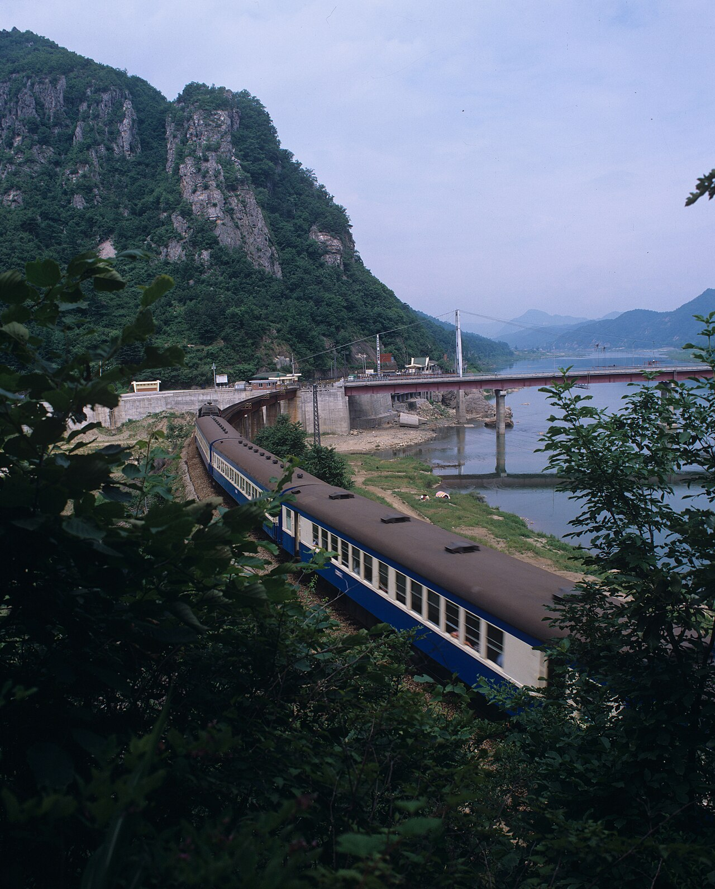

강촌
위치강원특별자치도 춘천시 남산면 강촌리 일대
옛 이름물깨말, 물가에 있는 마을
기차수도권 전철 경춘선 강촌역
자동차서울양양고속도로 강촌IC
강촌의 옛 이름은 ‘물깨말’, 물가에 있는 마을이라는 뜻입니다. 이름처럼 북한강이 마을을 감싸고 흐르고, 강 건너에는 삼악산이 솟아 있습니다.
1939년 경춘선 강촌역이 생긴 뒤로 강촌은 기차를 타고 찾아오는 곳이 되었습니다. 1970~80년대에는 대학생들의 MT 명소였고, 나훈아의 ‘강촌에 살고 싶네’(1969)도 이곳을 노래했습니다.
2010년 복선전철이 놓이면서 강가의 옛 역은 600m쯤 떨어진 새 역으로 옮겨 갔습니다. 대신 옛 철길 위로는 지금 레일바이크가 달립니다.
- 지도가볼 곳과 역 위치, 레일바이크 철길
- 오는 길기차, 자동차, 역에서 가는 법
- 지나온 길1939년부터 지금까지
가볼 곳
강촌과 그 가까이에서 가볼 만한 곳입니다. 이름을 누르면 해당 페이지로 이동합니다.
여행 정보
강촌에 오는 방법과 위치, 강촌이 걸어온 길입니다.
- 지도가볼 곳과 역 위치, 레일바이크 철길
- 오는 길기차, 자동차, 역에서 가는 법
- 지나온 길1939년부터 지금까지
구곡폭포와 문배마을
구곡폭포
주소춘천시 남산면 강촌구곡길 254
입장료2,000원 (65세 이상, 6세 이하, 장애인, 국가유공자, 기초생활수급자 등 면제)
주차약 200대
가는 길강촌역에서 걸어서 약 1시간
봉화산 기슭의 구곡폭포는 높이 약 50m로, 아홉 굽이를 돌아 떨어진다고 해서 이런 이름이 붙었습니다. 구구리폭포라고도 부릅니다.
큰비가 내린 뒤에 물줄기가 가장 웅장하고, 가을에는 폭포 주변에 단풍이 듭니다. 겨울에는 폭포가 얼어붙어 빙벽을 타는 사람들이 찾아옵니다.
문배마을
주소춘천시 남산면 강촌문배길
가는 길구곡폭포 입구에서 능선길로 걸어서 40분 안팎
구곡폭포 입구에서 능선길로 40분쯤 오르면 산 위 분지에 자리한 문배마을이 나옵니다. 옛 화전민 마을로, 생김새가 짐을 가득 실은 배를 닮아 문배마을이라 불렸다고 합니다.
마을 식당에서는 산채비빔밥과 토종닭 요리를 팝니다.
요금과 시간은 2026년 11월 27일에 확인했습니다. 가기 전에 한 번 더 확인하세요.
옛 강촌역 일대
주소춘천시 남산면 강촌로 34 (강촌유원지)
입장료없음
가는 길지금의 강촌역에서 600m쯤

1984년 6월, 옛 강촌역 앞을 지나는 비둘기호 열차
2010년까지 기차가 서던 옛 강촌역 앞은 강촌유원지입니다. 북한강을 따라 산책로가 길게 이어집니다.
출렁다리
1972년에 처음 놓인 출렁다리(길이 277m)는 1981년 새 강촌교가 생기고 안전 문제가 불거지면서 1985년에 철거됐습니다. 지금의 다리는 2016년 9월 강촌천 위에 길이 58m로 다시 놓은 것입니다.
노래비
‘강촌에 살고 싶네’ 노래비는 2005년에 세워졌고, 버튼을 누르면 노래가 흘러나옵니다.
물깨말 정원
2026년 8월 출렁다리 옆에 문을 연 약 2,000㎡ 정원입니다. 기찻길 산책로와 암석원이 있습니다.
북한강 물새길
춘천 봄내길 5코스입니다. 옛 강촌역에서 백양리역까지 2.1km, 한 시간쯤 걷는 쉬운 길입니다.
강촌레일파크
탑승장춘천시 신동면 김유정로 1383 (김유정역)
출발09:00 · 10:00 · 11:00 · 12:00 · 13:30 · 14:30 · 15:30 · 16:30 · 17:30
5~10월 주말과 공휴일은 18:30 추가
요금2인승 40,000원, 4인승 56,000원
옛 경춘선 철길 위를 페달을 밟아 달립니다. 김유정역 탑승장에서 출발해 중간휴게소까지 6km는 레일바이크로, 남은 2.5km는 낭만열차를 타고 옛 강촌역까지 내려옵니다.
편도라서 김유정역까지는 무료 셔틀버스로 돌아갑니다. 2012년 8월에 운행을 시작했습니다.
누리집에서 미리 예약해야 합니다. 당일 예약은 안 되고, 현장 구매는 선착순입니다.
맨 위 사진: 레일바이크 끝 구간을 잇는 낭만열차 (2025년 11월)
등선폭포와 삼악산
등선폭포
주소춘천시 서면 덕두원리 118-2
입장료2,000원, 입장하면 춘천사랑상품권 2,000원 제공 (춘천시민, 경로, 장애인, 국가유공자 등 면제)
강촌유원지에서 동쪽으로 2km쯤 가면 등선폭포가 있습니다. 주변의 승학폭포, 백련폭포, 비룡폭포 등과 함께 ‘등선 8경’을 이루고, 이쪽에서 삼악산으로 오르는 길이 이어집니다.
삼악산
삼악산은 용화봉(654m), 등선봉(632m), 청운봉(546m) 세 봉우리가 있어 붙은 이름이고, 1973년 강원도 기념물로 지정됐습니다.
맨 위 사진: 삼악산 정상부 (2023년 12월)
엘리시안 강촌
주소춘천시 남산면 북한강변길 688
가까운 역경춘선 백양리역
북한강변길에 있는 리조트로 스키장과 골프장(강촌 컨트리클럽), 콘도, 수영장, 캠핑장이 있습니다. 서울에서 가까운 스키장으로 알려져 있습니다.
지난 2025~26 시즌에는 2025년 12월 6일에 스키장을 열었습니다.
2026~27 시즌 개장일은 리조트 공지에서 확인하세요.
지도
가볼 곳과 역의 위치입니다. 붉은 점선은 레일바이크가 달리는 옛 경춘선 철길입니다. 점을 누르면 주소가 나옵니다.
오는 길
기차수도권 전철 경춘선을 타고 강촌역에서 내립니다.
자동차서울양양고속도로 강촌IC로 나옵니다.
강촌역에서
옛 강촌역 일대600m쯤
구곡폭포걸어서 약 1시간
레일바이크춘천 방향으로 한 정거장 더 가서 김유정역에서 탑니다.
엘리시안 강촌경춘선 백양리역이 가깝습니다.
걷기북한강 물새길(봄내길 5코스)로 옛 강촌역에서 백양리역까지 2.1km
맨 위 사진: 지금의 강촌역 (2023년 12월)